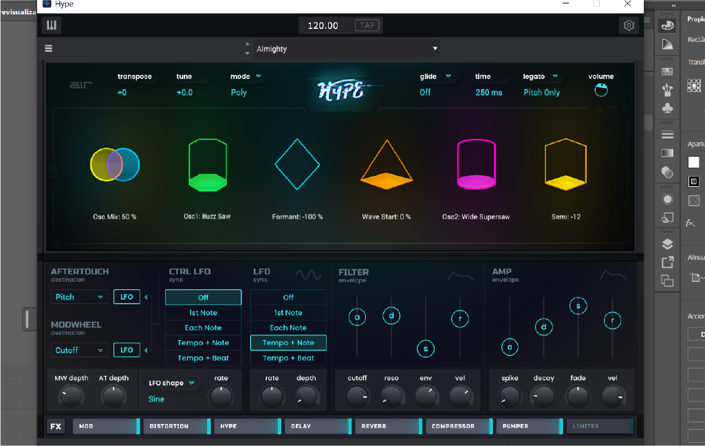

Detalles de servicios
Si deseas conocer más detalles sobre mis servicios, este apartado te ayudará a resolver tus dudas. Te invito a visitar mis redes sociales.
Performers Audiovisual
Me gusta la improvisacion musical y poder ser autentico con cada pieza interpretada.

Master
La música es un espacio de expresión ilimitada, y dentro de ella, la improvisación es uno de los aspectos que más disfruto. La libertad de crear sonidos en el momento, sin restricciones, me permite explorar nuevas ideas y conectar con la emoción pura del instante. A lo largo de mi experiencia, he trabajado en la improvisación musical como una herramienta para experimentar con ritmos, melodías y estructuras que surgen de manera espontánea.
- Improvisacion musical.
- Experimentacion.
- Generacion de beats.
La experimentación sonora es otro pilar fundamental en mi proceso creativo. Me apasiona descubrir nuevas texturas y jugar con diferentes combinaciones de sonidos, fusionando influencias y técnicas para desarrollar algo único en cada sesión. Desde la manipulación de efectos hasta la integración de elementos inesperados, cada pieza es un viaje sonoro que busca romper los límites convencionales.
Además, la generación de beats es una parte clave de mi enfoque musical. Construir ritmos que transmitan energía y carácter es un proceso que me permite explorar distintos géneros y estilos, adaptando cada beat a la atmósfera que quiero crear. Me encanta experimentar con estructuras rítmicas, capas de percusión y patrones dinámicos que dan vida a una composición.
Para mí, la música es un campo de exploración constante, donde la creatividad y la espontaneidad son los motores principales. Ya sea a través de la improvisación, la experimentación o la creación de beats, siempre busco nuevas formas de expresión que me permitan evolucionar y descubrir sonidos únicos.